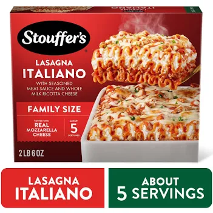

Home
Lasagna

Just Like Grandma used to make! Well, after grandpa passed away, she didn't feel the need to passion she once did. So this is what you remember after about age 10. This recipe will knock your socks off with how chewy the pasta is, despite being made fresh!
You could just go to the store and grab a box of stoffurrs too, but who doesn't love home made lasagna! I guess baking in the oven counts as home made enough after your husband dies....
Ingredients
- 1 Box of lasagna pasta
- A will to live
- 1 jar of your choice of pasta sauce
- 1/2 lbs of Motzerella Cheese
- Ground meat of choice (can substitute veg alternative)
- Sparkle in your eye (5 cloves garlic)
- 1 medium onion (yellow preferable)
- Italian seasoning
- Stove-top pan
- 1 12x8" baking dish (should be at least 3" deep)
- Mixing bowl
- Roll of aluminum foil
Instructions
Some recipes reccomend pre-cooking the pasta before baking. This is entirely optional, and I do not find a meaningful difference in the result
But since when does life have meaning anymnore?
- Pre-heat oven to 400F
- Brown your meat or meat substitute in a pan - you don't want it raw when the pasta is done cooking!
- Dice your onion and garlic.
- Drain meat and put in bowl.
- Add onion and garlic to pan to sautee.
- Once your onion is slightly translucent, pull from pan and add to meat.
- Mix in Jar of sauce to meat.
- Mix 1Tbs of Italian seasoning to the bowl and mix thouroghly.
- Add some of the sauce-meat mixture to bottom of baking dish.
- Pour some cheese ontop of the mixture.
- Layer some of the uncooked pasta on top of the cheese.
- Repeat 2-3 times until you have a final layer of noodles.
- Pour a final layer of cheese on top of the noodles.
- Cover in aluminum foil, make sure to crimp the edges down to ensure the steam stays in while baking.
- Bake in oven for 45minutes.
- Remove aluminum foil and broil on low until cheese on top of browned